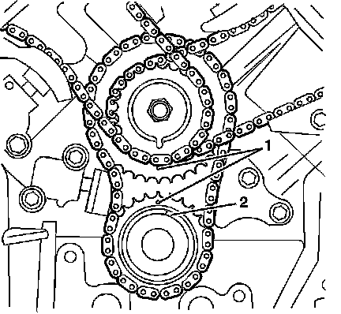
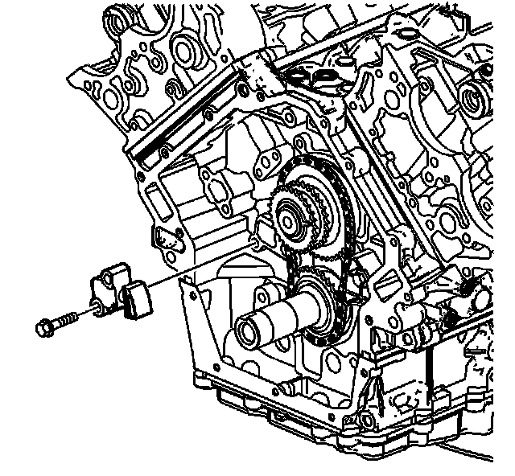
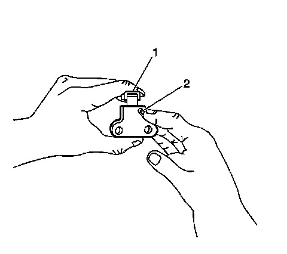
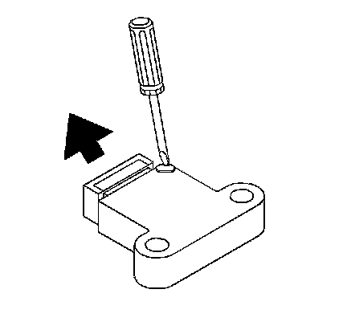

Primary Camshaft Drive Chain Tensioner Replacement
Primary Camshaft Drive Chain Tensioner Replacement
Tools Required
J 39946 Crankshaft Socket
Removal Procedure
1. Remove the engine oil pump. Refer to Oil Pump Replacement (Oil Pump Replacement) .

2. Align the primary timing marks (1) using the J 39946 .

3. Remove the 2 bolts attaching the primary camshaft drive chain tensioner to the engine block.
4. Remove the primary camshaft drive chain tensioner, allowing the tensioner to expand as you remove it.
5. Clean and inspect the camshaft timing drive components. Refer to Camshaft Timing Drive Components Cleaning and Inspection () .
Installation Procedure

1. Collapse the primary camshaft drive chain tensioner using the following procedure:
1. Rotate the ratchet release lever (2) clockwise and hold.
2. Collapse the tensioner shoe (1) and hold.
3. Release the ratchet lever (2).
2. Slowly release the pressure on the shoe (1), until the ratchet lever (2) moves to the first detent and a click is heard and felt.
3. Collapse the tensioner shoe (1) and hold.

4. Insert a pin through the hole in the release lever in order to lock the tensioner shoe in the collapsed position.
Notice: Refer to Fastener Notice (Fastener Notice) .
Important: Ensure the tensioner release lever is facing outward.
5. Install the primary camshaft drive chain tensioner and retaining bolts.
Tighten the primary camshaft drive chain tensioner bolts to 25 N.m (18 lb ft).
6. Remove the pin holding the tensioner to tighten any slack in the timing chain.
7. Ensure the primary timing marks (1) are aligned vertically.
8. Install the engine oil pump. Refer to Oil Pump Replacement (Oil Pump Replacement) .